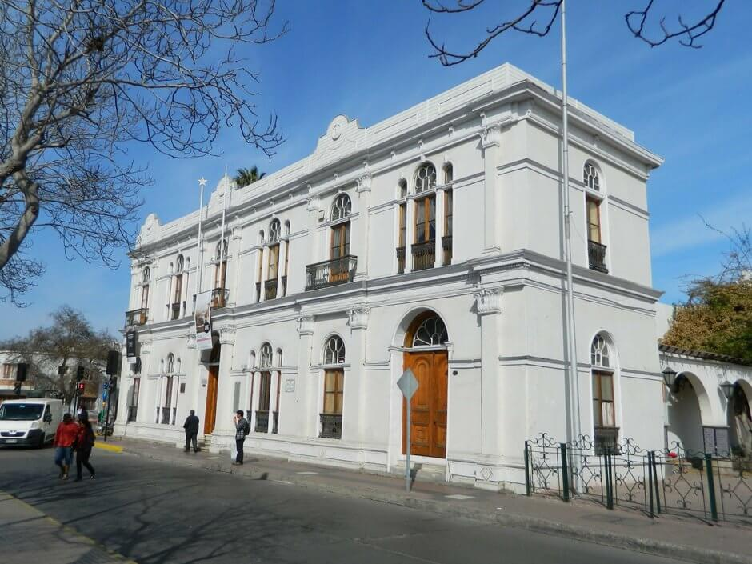
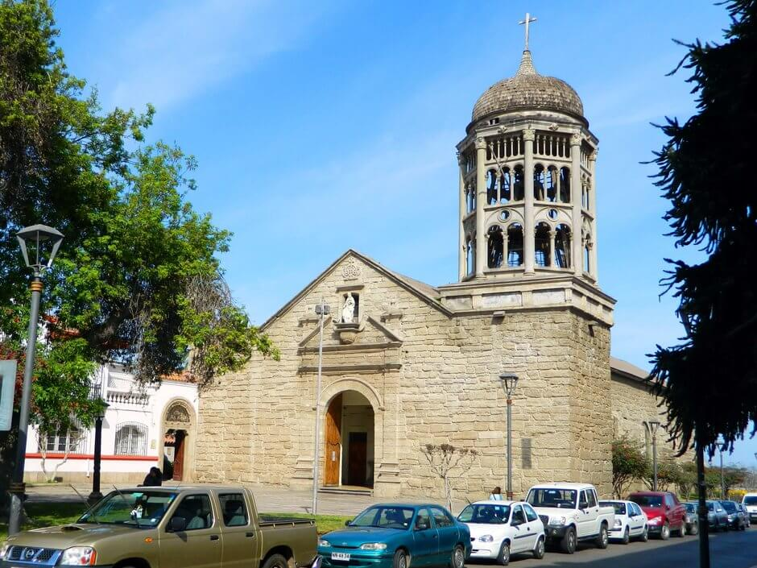

Disfruta de la magia del clima y la proximidad de las tierras fértiles dela región, donde se cultivan uvas para producir buenos vinos y piscos, todo en los alrededores de La Serena. Si vienes en primavera y verano, aprovecha las playas, camina por la extensa Avenida del Mar para elegir dónde instalarás tu toalla, o anda de compras a la Recova, el mercado más famoso de la zona, que incluye una excelente feria de artesanía.
VISITA NUESTRAS PLAYAS

TURISMO EN LA SERENA

Turismo
Museos

Iglesias